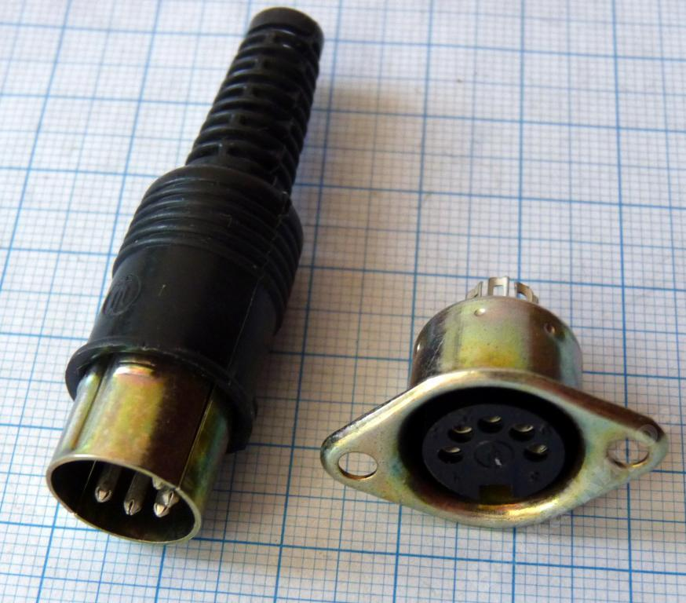
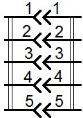

Разъемы
К коммутирующим устройствам относятся также разъемы (соединители), с помощью которых соединяют участки цепей, узлы и блоки радиоэлектрической аппаратуры, например громкоговоритель с выходом усилителя 3Ч.
Унифицированный пятиконтактный разъем СГ5 показан на рис. 1. Он состоит из гнездовой части, укрепляемой на панели или шасси радиотехнического устройства и штепсельной части, вставляемой в гнездовую часть. Чтобы исключить неправильное соединение, в гнездовой части имеется паз, а в штепсельной соответствующий ему выступ. Контакты гнездовой части на схемах изображают, как и гнезда, в виде рогатки, а контакты штепсельной части в виде вилки. Параллельные линии на обеих частях разъема символизируют механические связи между их контактами.


Рис. 1 - Разъем СГ5 и его условное графическое обозначение
Источники:
Литература: В.В. Фролов, Язык радиосхем, Москва, 1998.